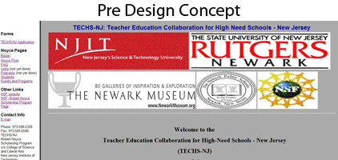

The newly redesigned TECHS-NJ website began with testing
and note taking while browsing through the original layout. Some key aspects of the site that appeared consideration
in the redesign included the lack of a strong logo and homepage that told the user the meaning of the site, Center justified text, too much information on the homepage, and unclear navigation headings. Overall, the organization of the website needed tightening up, and nothing seemed to tie all the pieces together. My first impression of the side navigation bar was positive
in the fact that it was stationary and always their for reference, but it seemed to take the focus too much from the content
of the pages. One of the early decisions therefore was to keep
a navigation menu that was consistent on all pages. This would allow for a simple but clear site diagram and in turn let users easily make a mental model of the pages and their relation
to each other. A home page centered around a hub-and-spoke or a one tier hierarchical layout would be the result. Depending on how the visitor chose to envision it.
Once the home page was complete, the secondary pages easily followed. While they closely resembled the homepage, I felt that subtle differences were important. All of the pages used a logo in the upper left hand corner, creating good logical flow. Images representing the affiliated schools were lightened making them sink into slightly into the background. TECHS-NJ's original design, displayed it's affiliates images at full opacity making them the focal point of the home page. I found that they caused confusion and clutter.
After navigating to a secondary page, a home icon appears
in the list of options and the color of the text assigned to each page title changes in color. This provides the user a way to see that they have previously visited those pages. Each secondary page also contains a heading centered just below the navigation bar telling them the current page. And finally since each page contains a navigation to all other pages, the user can choose
to navigate to any other area at any time. The home page however does not contain a "home" button that would obviously link to itself.
Upon completion of the redesign of the TECHS-NJ website I find that it is much improved from the original layout. The structure seems straightforward and clear. It provides an easy to use navigational system that answers the important questions users want answered such as current and previous location. Also, the new corporate identity helps to inform the user that they are at the TECHS-NJ website which is affiliated with organizations such as NJIT and the Newark Museum. It more clearly explains that they share a common goal in the TECHS-NJ program.
STORY BOARD

|
 |